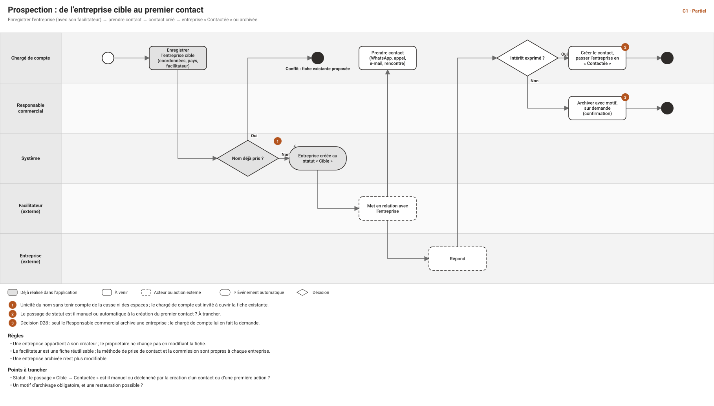
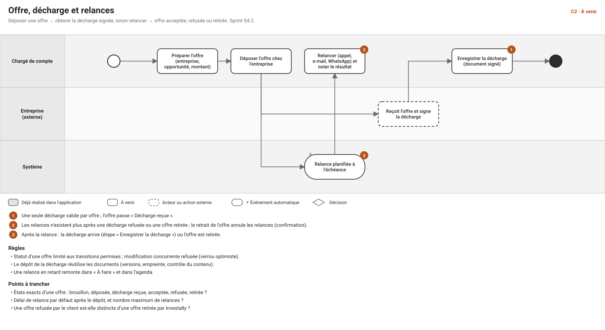
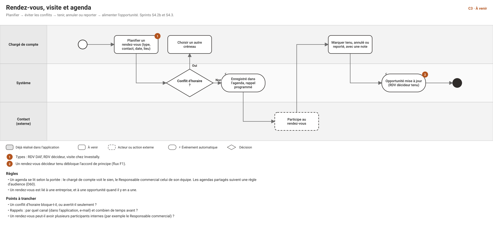
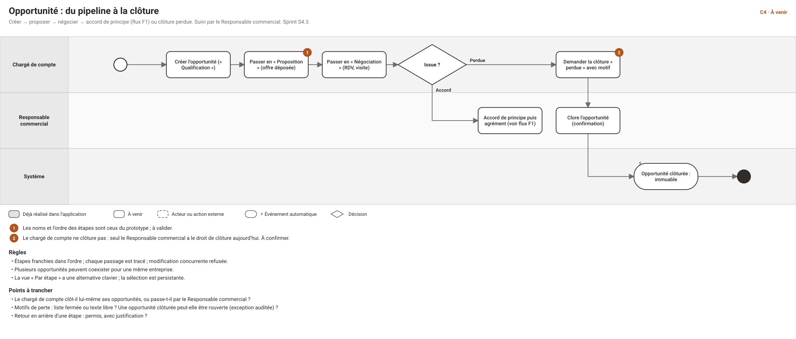
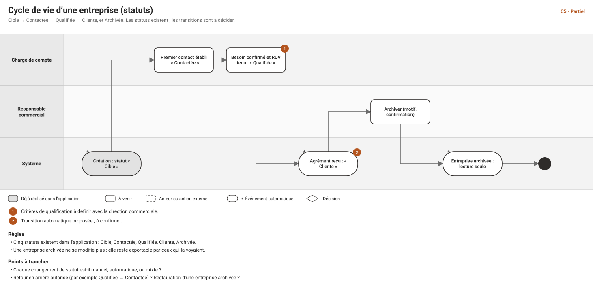

Cas d'usage et workflows — module commercial (Business Development)
Date : 2026-10-30 · Statut : proposition à valider · Suite de : CAS-D-USAGE-FLUX-TRANSVERSES.md · Schémas : workflows/index.html (flux C1 à C5) · Écrans : wireframes
Le module commercial couvre l'entreprise cible jusqu'à l'accord de principe : entreprises, contacts, offres, décharges, relances, rendez-vous, visites, opportunités. Les flux qui le traversent vers Investudy et la Finance sont dans le document des flux transverses (F1 à F7). Rien n'est décidé ici : les points « à trancher » sont ceux de la direction produit. Les étapes déjà réalisées sont signalées.
1. Droits actuels du module (rappel de la matrice)
| Objet | Chargé de compte | Responsable commercial | Direction, Support, Finance |
|---|---|---|---|
| Entreprise | lire, créer, modifier (Propre) | + archiver, exporter (Équipe) | lecture (Tous) ; Direction exporte |
| Contact | lire, créer, modifier (Propre) | tout, supprimer compris (Équipe) | Direction et Support : lecture |
| Offre, décharge, relance, rendez-vous, visite | lire, créer, modifier, retirer ou annuler ou terminer (Propre) | tout (Équipe) | — |
| Opportunité | lire, créer, modifier, avancer (Propre) | lecture Tous ; créer, modifier, avancer, clore, exporter (Équipe) | Direction : lecture, export |
| Ambassadeur | lire, créer (Propre) | lire Tous ; créer, modifier (Équipe) | Direction : lecture |
| Facilitateur, commission | facilitateur : lire, créer ; commission : lire (Propre) | facilitateur et commission : lire, créer ou définir (Équipe) | Direction et Finance : lecture (Tous) |
Deux écarts à noter : le chargé de compte ne peut ni archiver une entreprise ni clore une opportunité (réservé au Responsable commercial) ; et le droit d'export existe encore à part (bd.company.export) alors que la règle retenue est « qui voit exporte » (à réaligner, D26).
2. Les cinq flux du module
Chaque schéma est dans workflows/svg/.





3. Entreprises
CU-C-01 — Créer une entreprise cible (réalisé)
- Acteur : chargé de compte, Responsable commercial. Écran : 6. Flux : C1.
- Scénario : 1. « Nouvelle entreprise ». 2. Nom (obligatoire), pays, secteur, e-mail, téléphone. 3. Facilitateur facultatif (existant ou nouveau), méthode de contact, commission si le droit existe. 4. Enregistrer.
- Variantes : nom déjà pris (sans tenir compte de la casse) → conflit ; champs non conformes en surbrillance avec message ; facilitateur d'un collègue → « introuvable ».
- Résultat : statut « Cible », propriétaire = le créateur, audit. Droits :
bd.company.create.
CU-C-02 — Rechercher, filtrer et sélectionner des entreprises (partiellement réalisé)
- Acteur : tout rôle qui lit les entreprises. Écran : 4.
- Scénario : recherche par nom ; sélection persistante de plusieurs lignes ; pagination. Réalisé : recherche, pagination, sélection. À venir (lot « tableaux » de S4.1) : filtres (statut, pays), tri, compteurs, colonnes au choix.
- Droits : la liste ne montre que la portée de l'utilisateur.
CU-C-03 — Consulter la fiche d'une entreprise (réalisé, 360° à venir)
- Écrans : 5 (actuel), 10 (cible). Réalisé : identité, mise en relation, documents. À venir : contacts, offres, rendez-vous, opportunités, historique, par onglets visibles selon les droits.
- Variantes : entreprise hors portée → « introuvable », même message qu'un identifiant inexistant.
CU-C-04 — Modifier une entreprise (réalisé)
- Scénario : « Modifier » ; fenêtre préremplie ; enregistrement avec la version lue (refus si quelqu'un a modifié entre-temps). Le propriétaire et le statut ne se modifient pas ici ; une entreprise archivée est en lecture seule.
- Droits :
bd.company.update; la commission :bd.commission.manageseulement (une modification par un chargé de compte la conserve).
CU-C-05 — Changer le statut d'une entreprise (à venir)
- Acteur : chargé de compte (Contactée, Qualifiée), système (Cliente à l'agrément). Flux : C5.
- Statuts : Cible, Contactée, Qualifiée, Cliente, Archivée. À trancher : transitions manuelles ou automatiques, critères de « Qualifiée », retour en arrière.
CU-C-06 — Archiver une entreprise (à venir)
- Acteur : Responsable commercial (le chargé de compte n'a pas ce droit). Scénario : « Archiver », motif, confirmation ; l'entreprise passe en lecture seule.
- À trancher : le chargé de compte peut-il archiver ses entreprises ? motif obligatoire ? restauration ? Droits :
bd.company.archive.
CU-C-07 — Exporter la fiche d'une entreprise (réalisé)
- Voir le flux F5 : qui voit exporte, chaque export est tracé, le document ne contient que ce que l'utilisateur voit.
4. Contacts
CU-C-10 — Créer un contact (à venir, S4.1)
- Acteur : chargé de compte. Écran : 12. Scénario : 1. Depuis la fiche entreprise ou la liste, « Nouveau contact ». 2. Entreprise, nom, prénom, fonction (DAF, décideur, autre), téléphone, e-mail. 3. Enregistrer.
- Variantes : doublon probable (même entreprise et même nom ou e-mail) → la fiche existante est proposée ; e-mail ou téléphone invalide → champ en surbrillance.
- Règle : un contact appartient à une entreprise. À trancher : champs exacts, fonctions possibles. Droits :
bd.contact.create(Propre).
CU-C-11 — Modifier un contact (à venir)
- Mêmes champs ; version lue contrôlée ; audit avant/après. Droits :
bd.contact.update.
CU-C-12 — Rattacher ou détacher un contact d'une entreprise (à venir)
- Scénario : déplacer un contact vers une autre entreprise de sa portée. Règles : les rendez-vous liés restent attachés à l'ancienne entreprise (à confirmer). À trancher : un contact peut-il appartenir à plusieurs entreprises ?
CU-C-13 — Rechercher et consulter les contacts (à venir)
- Écran : 11. Liste filtrable par fonction et entreprise ; fiche du contact avec son historique d'actions. Droits : la portée de l'entreprise liée.
CU-C-14 — Supprimer un contact (à venir)
- Acteur : Responsable commercial seulement (le chargé de compte n'a pas
bd.contact.delete). Suppression logique avec confirmation ; refusée si le contact est lié à un rendez-vous ou un apprenant (à trancher).
5. Offres, décharges et relances (flux C2, S4.2)
CU-C-20 — Préparer puis déposer une offre
- Acteur : chargé de compte. Écrans : 13, 14. Scénario : 1. « Nouvelle offre » liée à l'entreprise (et à une opportunité). 2. Montant, objet, pièces jointes. 3. « Déposer » : l'offre passe à « Déposée » et la date est enregistrée.
- Variantes : entreprise archivée → refus ; modification concurrente → refus (version).
- Droits :
bd.offer.create / update(Propre). À trancher : états exacts (brouillon, déposée, décharge reçue, acceptée, refusée, retirée).
CU-C-21 — Enregistrer la décharge signée
- Scénario : 1. Depuis l'offre, « Déposer la décharge » (écran 15). 2. Date de réception, reçue par, fichier signé (contrôle du contenu). 3. L'offre passe à « Décharge reçue ».
- Règles : une seule décharge valide par offre ; pas de décharge sur une offre retirée. Droits :
bd.receipt.create. État : à venir.
CU-C-22 — Planifier et effectuer une relance
- Écran : 16. Scénario : 1. Planification (automatique après le dépôt, ou manuelle) avec échéance et canal. 2. À l'échéance, la relance apparaît dans « À faire » et l'agenda. 3. Le chargé de compte la réalise (appel, e-mail, WhatsApp) et note le résultat : « Terminer ».
- Règles : plus de relance après une décharge refusée ou une offre retirée ; une relance en retard est signalée. Droits :
bd.followup.create / complete. À trancher : délai par défaut, nombre maximum de relances.
CU-C-23 — Retirer une offre
- Scénario : « Retirer l'offre » avec motif, confirmation ; les relances à venir sont annulées. Droits :
bd.offer.withdraw(Propre). Variantes : offre déjà acceptée → refus.
6. Rendez-vous, visites et agenda (flux C3, S4.2b et S4.3)
CU-C-30 — Planifier un rendez-vous
- Écran : 18. Types : RDV DAF, RDV décideur, visite chez Investally. Scénario : 1. Type, entreprise, contact, date, heure, lieu ou lien, opportunité liée. 2. Contrôle du conflit d'horaire. 3. Enregistrement dans l'agenda, rappel programmé.
- Variantes : conflit d'horaire (bloque ou avertit : à trancher) ; contact non rattaché à l'entreprise → refus. Droits :
bd.appointment.create,bd.visit.create(Propre).
CU-C-31 — Tenir, annuler ou reporter un rendez-vous
- Scénario : après le rendez-vous, le chargé de compte le marque « tenu » avec une note, ou « annulé » / « reporté » avec motif. Règle : un rendez-vous décideur tenu débloque l'accord de principe (flux F1). Droits :
bd.appointment.update / cancel.
CU-C-32 — Consulter l'agenda
- Écran : 17. Vues jour, semaine, mois ; filtre par type. Droits : le chargé de compte voit le sien ; le Responsable commercial celui de son équipe ; les agendas partagés suivent une règle d'audience à définir (D60).
CU-C-33 — Créer un événement depuis un objet
- Scénario : depuis une entreprise, une offre ou une opportunité, « Planifier » préremplit le lien. État : à venir (S4.2b).
7. Opportunités (flux C4, S4.3)
CU-C-40 — Créer une opportunité
- Acteur : chargé de compte. Écran : 19. Scénario : entreprise, intitulé, montant estimé, source ; l'opportunité apparaît en « Qualification ». Règle : plusieurs opportunités simultanées par entreprise. Droits :
bd.opportunity.create(Propre).
CU-C-41 — Faire avancer une opportunité
- Écrans : 19 (cartes), 20 (par étape), 21 (fiche). Scénario : « Passer à l'étape suivante » ; en vue par étape, la carte se déplace ; alternative clavier par un menu « Déplacer vers… ».
- Règles : étapes dans l'ordre ; chaque passage tracé ; version contrôlée. Le passage à « Accord de principe » est soumis à la règle du rendez-vous décideur (F1). Étapes du prototype (à valider) : Qualification, Proposition, Négociation, Accord de principe, Agrément. Droits :
bd.opportunity.advance(Propre).
CU-C-42 — Clore une opportunité (gagnée ou perdue)
- Acteur : Responsable commercial (le chargé de compte n'a pas
bd.opportunity.close). Scénario : « Clore », issue, motif, confirmation. Règle : une opportunité clôturée est immuable. - À trancher : le chargé de compte clôt-il lui-même ? motifs de perte (liste fermée ou texte libre) ? réouverture exceptionnelle ?
CU-C-43 — Suivre le pipeline
- Acteur : Responsable commercial, Direction. Vue de toutes les opportunités de l'équipe (écrans 20 et tableaux de bord 33 à 35) ; export tracé. Droits : lecture Tous pour le Responsable commercial et la Direction.
8. Facilitateurs et commissions (rappel)
- Réutiliser un facilitateur existant : choisi dans la liste de sa portée à la création ou à la modification d'une entreprise (réalisé).
- Définir ou modifier une commission : Responsable commercial (réalisé). Voir sa commission : chargé de compte, sur ses entreprises (réalisé). Le versement et son suivi sont dans le flux F3 (à venir).
9. Permissions et données à prévoir
| Besoin | Proposition |
|---|---|
| Statut d'entreprise : changer le statut | utiliser bd.company.update ; à confirmer si un droit dédié est nécessaire |
| Doublons de contacts | règle de détection côté serveur (entreprise + nom ou e-mail) |
| Dérogation, agrément | voir le document des flux transverses (§ 3) |
| Export d'une liste d'entreprises ou d'opportunités | lecture + confirmation récente du second facteur (option C, à confirmer) |
10. Points à trancher, par ordre d'impact
- Statuts d'une entreprise : transitions manuelles ou automatiques, critères de « Qualifiée » (C5, CU-C-05).
- Qui archive et qui clôt : le chargé de compte, ou seulement le Responsable commercial (CU-C-06, CU-C-42).
- Offre : états exacts, délai et nombre de relances (C2).
- Rendez-vous : un conflit d'horaire bloque-t-il ? rappels et canal (C3).
- Contact : champs, fonctions possibles, appartenance à plusieurs entreprises (CU-C-10 et CU-C-12).
- Étapes d'opportunité : noms, ordre, retour en arrière (C4).
- Agendas partagés : audience (D60).
11. Suite proposée
Après validation : le module Investudy (catalogue, sessions, inscriptions, présences, certifications) en cas d'usage détaillés, puis Reporting, Stocks, Finance, RH et fiscalité.